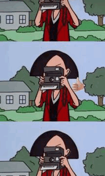
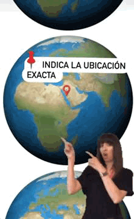
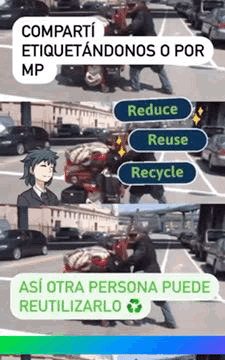

¿¡NOS QUERES AYUDAR A COMPARTIR LO QUE ENCONTRAS EN LAS CALLES DE MALAGA!?
Si te interesa reducir, reciclar y reutilizar cosas (muebles, artefactos electronicos, herramientas, maquinas,etc.) para evitar contaminar nuestro planeta, tambien te puede interesar ayudar a quienes quieran darle un nuevo uso a esas cosas.
Por eso si encontras algo tirado por la calle y queres avisarle a otros de que lo encontraste para que pueda darle una nueva vida, podes hacer lo siguiente:
PRIMER PASO
Hacé una foto del objeto
que encontraste en la basura
SEGUNDO PASO
Indicá en la imagen la ubicacion
exacta del producto encontrado
TERCER PASO
Compartinos la imagen via
privado en nuestra cuenta de
INSTAGRAM o bien nos podes
etiquer en la siguiente direccion @ESTOYENLABASURAMALAGA,
asi otra persona que le interese
el producto puede pasar a rescatarlo
reutilizando el producto y
contaminando menos el planeta